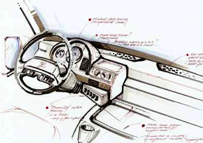
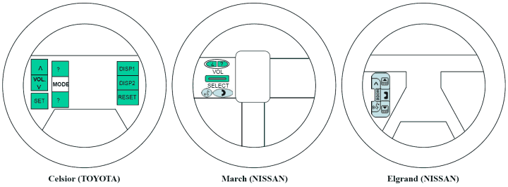
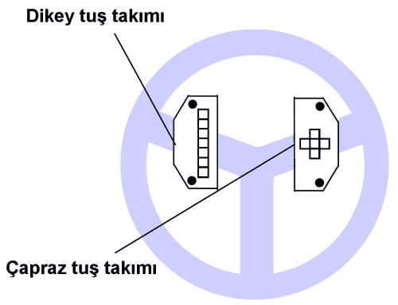
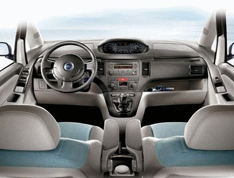
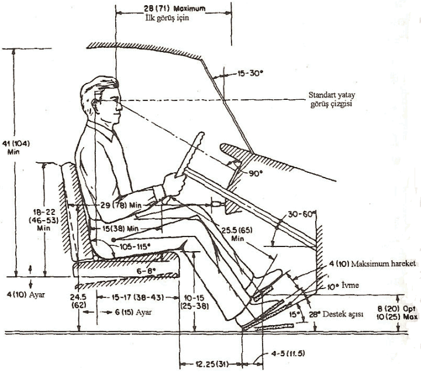

|
Türkay Dereli, Serap Ulusam Seçkiner, Alptekin Durmuþoðlu
Endüstri Müh. Bölümü, Gaziantep Üniversitesi
Þubat 2006, Gaziantep
Not: Orijinal olarak TurkCADCAM.net
Dergisi 2. Sayýsý için hazýrlanmýþ bu makale,
ilk kez Mart 2007'de TurkCADCAM.net Portalý'ndan
yayýnlanmaya baþlamýþtýr.
ÖZET
Otomobil satýn alma sürecinde müþterilerin tercihlerinde etkili olan tasarým özelliklerinin büyük bir bölümü ergonomi bilimi ile ilgili olup, ergonomik faktörler araç içerisinde yolculuk yapan sürücü ve yolcularýn güvenliðinin ve konforunun saðlanmasý açýsýndan kritik öneme sahiptir. Bu makalede, otomobil iç kabin tasarýmýný etkileyen ergonomik prensipler tartýþýlmaktadýr.

GÝRÝÞ
Varoluþundan bu yana, insanoðlu daima yaþamýný devam ettirmenin, bir adým daha ileriye giderek yaþamýný kolaylaþtýrmanýn yollarýný aramýþtýr. Bu arayýþ sonucunda, önce tekerleði bulmuþ, pek sonra bu tekerleðin üzerine kendini taþýyacak taþýtý yapmayý da akýl etmiþtir. Geçmiþte yayýnlanan bir reklam filminde belirtildiði gibi; bir toplu iðnenin varoluþ nedeni ile bir otomobilin varoluþ nedeni aynýdýr: insan yaþamýný kolaylaþtýrmak ve insana hizmet etmek. Burada en baskýn anahtar kelime: 'kolaylaþtýrmak' þeklinde ortaya çýkmaktadýr. Bununla birlikte; insan yaþamýný kolaylaþtýrmasý için üretilen bir çok ürün, araç, gereç ya da makina, onu kullanacak olanýn insan olduðu düþünülmeden tasarlandýðý için býrakýn asýl amacýna ulaþmasýný, bazen insan yaþamýný zorlaþtýrabilmektedir. Daha da ileri gidecek olursak, çeþitli kazalara, yaralanmalara ve ölümlere neden olmaktadýr. Ýþte, tam da bu noktada ergonomi biliminin tartýþýlmasý gerekir.
Ergonomi; insanlarýn anatomik özelliklerini, antropometrik karakteristiklerini, fizyolojik kapasite ve toleranslarýný göz önünde tutarak, endüstriyel iþ ortamýndaki tüm faktörlerin etkisi ile oluþabilecek, organik ve psikososyal stresler karþýsýnda, sistem verimliliði ve insan-makine-çevre uyumunun temel yasalarýný ortaya koymaya çalýþan, çok disiplinli bir araþtýrma geliþtirme alanýdýr [1]. Ergonomi biliminin temelleri tüm tasarýmcýlar ve üreticiler tarafýndan uygulanmalýdýr. Ürünler insan içindir, dolayýsýyla insan faktörü düþünülmeden tasarlanan ve üretilen bir ürün (makine, araç/gereç vb) hedeflediði ticari baþarýya nasýl ulaþacaktýr? Hedeflenen ticari baþarýya ulaþabilmek için üreticilerin; müþterinin tercih ettiði, güvenli, kullanýmý kolay ve katma deðeri yüksek ürünleri piyasaya sürmesi gerekir [2]. Alýcý tarafýndan tercih edilmeyecek bir ürünün, tasarlanmasýna da, üretilmesine de gerek yoktur aslýnda. Farklý ürün yelpazesinden tercih yapan bir alýcýnýn, tercihini yaparken göz önünde bulundurduðu faktörler nelerdir? Bu sorunun cevabýný bulmasý gerekenler elbette ki üreticilerdir. Ürünlerini bu cevap doðrultusunda üretebilen üreticilerin baþarýyý yakacaklarý muhakkaktýr. Otomobil müþterilerinin satýn alma aþamasýnda araçlarda aradýðý özellikler aþaðýdaki tabloda (Tablo 1) gruplandýrarak verilmiþtir [2]:
Tablo 1. Otomobil müþterilerinin satýn alma aþamasýnda araçlarda aradýðý özellikler
Kategori |
Özellik |
Sürücü ve yolcu güvenliði |
Emniyet kemeri; hava yastýðý; iç geometrik dizayn ve bileþenleri; yangýn, elektrik ve kimyasal tehlikelere önlem |
Araç kontrolü |
Direksiyon; frenler; yol bilgisayarý; sürüþ kalitesi; koltuk konforu |
Dýþ tasarým |
Görüþ alaný, camlar; aynalar; farlar, stop lambalarý; aracýn estetiði (çekiciliði) |
Ýç tasarým |
Kontrol düðmeleri ve kollarý; göstergeler; havalandýrma ve klima; ses izolasyonu |
Bakým ve onarým, garanti |
Servis, yedek parça; garanti kapsamý ve süresi |
Ekonomi |
Alýþ fiyatý; kullaným maliyetleri (yakýt, vergi, bakým.) |
Müþterilerin otomobil satýn alýrken dikkat ettikleri özelliklerin büyük bir kýsmý ergonomi bilimini doðrudan ya da dolaylý olarak ilgilendirmektedir. Bu makalede, daha ziyade iç kabin tasarýmýný etkileyen ergonomik prensipler üzerinde durulacaktýr.
Ýlk otomobilin icadýndan bu yana, otomobil üreticileri her zaman en yeniyi, en iyiyi ve en çok özelliðe sahip olaný müþteriye sunma yarýþý içinde olmuþlar, bu yarýþý bazen abartmýþ; otomobillere aslýnda kullanýcýnýn kullanmadýðý, ihtiyacýn olmadýðý, belki de kullanmasý zor olduðu için kullanýlmayan bazý özellikler, beceriler yüklemiþlerdir. Fakat, günümüzün bilinçli tüketicileri için önemli olan ürünün ne kadar özelliðe sahip olduðu deðil, bu özelliklerin ne kadarýna ihtiyaç duyduðu ve ne kadarýný kullanabildiðidir. Ürünler arasýndaki kritik fark ta bu noktada ortaya çýkmakta, kullanýlabilir ve gerçekten kullanan kiþinin ihtiyaçlarýna cevap veren özelliklere sahip olan ürün bir adým öne çýkmaktadýr. Bu yönüyle; "kullandýðýnýz otomobili ne kadar tanýyorsunuz, barýndýrdýðý özelliklerin ne iþe yaradýðýný biliyor musunuz, bu özelliklerin hangilerini kullanýyor veya kullanabiliyorsunuz?" sorusuna sürücülerin vereceði cevaplarýn dikkatle süzülmesi gerekir.
Her ne kadar, otomobil üreticileri kadar olmasa da, günümüzde otomobil tüketicilerinin de (özellikle bu ifade kullanýlmýþtýr), ergonomi bilimine gösterdiði hassasiyet düzeyinin arttýðý ve kullanýcýlarýn giderek bilinçlendiði düþünülmektedir. Günümüz otomobil üreticileri de; "ergonomik prensipleri" giderek daha çok ön plana çýkarmakta, bu prensipleri ciddi bir þekilde uygulamaktadýr. Ergonomik tasarým, insan faktörünü toplam tasarým sürecinin merkezine yerleþtirir. Bu süreçte; insanlarýn yapýsal (anatomik), boyutsal (antropometrik), beceri, ruhsal ve fizyolojik özellikleri dikkate alýnýr. Üretilecek ürünler bu özellikler doðrultusunda tasarlanýr. Otomobiller için de geçerli olan bu ergonomik tasarým sürecinin tipik evreleri þunlardýr [3]:
- kullanýcý özelliklerinin tanýmlanmasý
- temel tasarým parametrelerinin tanýmlanmasý
- tasarým parametrelerinin insanlarýn biyolojik ve fizyolojik yapýlarý dikkate alýnarak test edilmesi
- testlerde elde edilen bulgularýn deðerlendirilmesi
- deðerlendirmeler sonucunda projenin temel parametrelerine son þeklinin verilmesi
Beþ adýmdan oluþan bu süreç sonucunda insan-makine iliþkileri daha iyi tanýmlanmýþ ve bu tanýmlar doðrultusunda araç içerisindeki yolcularýn konforu saðlanmýþ, bu konforla birlikte aracý kullananýn insan olduðu mantýðýyla sürücü ve yolcularýn araç içerisindeki yol boyunca güvenlikleri de saðlanmýþ olur. Yol güvenliði olarak adlandýrabileceðimiz sürücü ve yolcu güvenliði araç-elemanlarýnýn da ergonomik yaklaþýmlarla ele alýnmasý ile mümkündür [3]:
- birincil ve ikincil kontrol elemanlarýnýn kolay eriþilebilir, basit ve doðal hareketlerle kullanýlabilir olmasý
- sürücü görüþ alanýnýn etkinliðinin saðlanmasý (sürücü koltuðu, cam yüzeyleri, aynalar.)
- kabinin kazalardaki yaralanmalarý minimuma indirecek þekilde tasarlanmasý
- sürücü koltuðunun sürücüye rahatsýzlýk vermeyecek þekilde tasarlanmasý
- araç þasesinin dinamik stresleri yolculara iletme düzeyinin azaltýlmasý
- en uygun kapý tasarýmýnýn bulunmasý vb.
OTOMOBÝL ÝÇ MEKAN ELEMANLARININ ERGONOMÝK TASARIMI
Günümüz otomobilleri ne kadar ileri teknolojiye sahip olurlarsa olsunlar, onlarý kullanacak olan sürücülerdir, bir baþka deyiþle otomobiller (eskilerin deyimiyle makinalar) insanlara aittir. Ýnsan-makine etkileþimlerini inceleyen ergonomi bilimi ve bu bilimin uygulanmasý gereken kurallarý, araç içerisinde yolculuk yapan sürücü ve yolcularýn konfor ve güvenliðinin saðlanmasý açýsýndan kritik öneme sahiptir. Ergonomik olarak tasarlanmamýþ bir araç kabini, dolayýsý ile kabin elemanlarý, sürücünün konsantrasyonunun bozulmasýna ve sürüþ kalitesinin azalmasýna neden olacaktýr. Sürücü, kontrol elemanlarýný kullanmak için fazladan bir çaba harcayacak, aynalar ve ön panel üzerinde yer alan göstergelerdeki bilgilerden etkili bir þekilde faydalanamayacaktýr. Bütün bunlar, sürücünün yorulmasýna, araç içindeki ve dýþýndaki durumlardan haberdar olamamasýna yol açabilecektir. Oluþabilecek her hangi bir problem anýnda, sürücünün bu problemi çözmesi zorlaþacak ve istenmeyen durumlarýn oluþabilmesi engellenemeyecektir. Tasarýmda ergonomik prensiplerin daha ön plana çýkartýlabileceði bazý kabin elemanlarýný þu þekilde sýralanabilir; sürücü ve yolcu koltuklarý, emniyet kemerleri, direksiyon simidi, mekanik kontrol elemanlarý, göstergeler, dikiz aynalarý, kontrol düðmeleri.... v.b. gibi.
Sürücü koltuðu otomobil içerisindeki en önemli elemanlardan biridir. Bu elemanýn, ergonomik prensipler doðrultusunda tasarlanmasý sürücünün araç üzerindeki hakimiyetini destekleyecektir. Aksi durumda, sürücünün araç üzerindeki kontrolü zayýflayacaktýr. Ergonomik bir sürücü koltuðu, sürücünün aracýn ön ve arka tarafýný görmesini engellememelidir, araç içerisindeki kontrol elemanlarýna ulaþmasýný desteklemeli, yapýldýðý malzeme ve tasarýmý itibariyle sürücüye rahatsýzlýk vermemelidir. Ayrýca, yapýlan bazý araþtýrmalar sonucunda her topluluðun kendine özgü antropometrik ölçülere sahip olduðu tespit edilmiþtir. Ülkemiz insanýnýn vücut ölçüleri Avrupalýlarýnkinden çok farklý nitelikler gösterir. Türkiye'de boy ortalamasýnýn daha düþük olmasýnýn yaný sýra beden-bacak oranlamasý da deðiþiktir [4]. Araç koltuðu tasarýmlarýnda bu araçlarý kullanacak olan toplumlarýn vücut ölçülerinin de dikkate alýnmasý ergonomik açýdan faydalý olacaktýr [5]. Örneðin Norveç'te tasarlanan ve Japonya'ya ihraç edilmesi düþünülen bir aracýn, Japonlarýn antropometrik özellikleri düþünülmeden üretilmesi, çeþitli sorunlara neden olacaktýr. Bunun tersi de elbette mümkündür. Türkiye'de kullanýlan bazý Japon yapýmý minibüsleri düþünecek olursak, küçük iç hacme ve koltuklara sahip olan bu araçlarýn aslýnda ergonomik olarak ülkemiz insanýnýn vücut ölçülerine pek de uygun olmadýðý söylenebilir.
Sürücü koltuða oturduðunda (özellikle de kilolu kullanýcýlar için), oluþacak basýncýn dengeli bir þekilde basen ve bacaðýn dize yakýn kýsmýna daðýlmasý için koltuðun oturak kýsmýnýn önü, yumuþak bir eðime sahip olmalýdýr. Sürücü koltuðunun, vücutla temasýnda yaþanacak problemlerin önlenmesi için koltuðun oturak kýsmýnda yeterli derecede kabarýklýk olmasý gerekmektedir. Koltuðun kumaþý da ergonomik açýdan önem taþýmaktadýr. Aþýrý terlemeye neden olmayacak, hava geçirgenliði olan kumaþlar tercih edilmelidir. Koltuðun arka kýsmý tasarlanýrken insan omurgasýnýn ters "S" þeklinde olduðu göz önünde tutulmalý ve koltuðun bel bölgesine rastlayan kýsmý çýkýntýlý, sýrt bölgesine rastlayan kýsmý ise girintili olmalýdýr. Sürücü koltuklarýnda yol koþullarýnda olabilecek problemlerden en az etkinin kullanýma yansýmasý için süspansiyonlu koltuklar tercih edilmelidir. Son dönemde, bir araba üreticisi firma koltuk tasarýmýnda ergonomik faktörleri göz önünde tutarak, kol dayama destekli, minder eðimli, yükseklik ayarlý, diz mesafesi ve sýrtlýk eðim ayarlý yeni bir sürücü koltuðu tasarlamýþtýr. Yapýlan bir araþtýrmada, sürücü koltuðu oturaðýnýn ülke insanýmýza uygun olabilmesi için eninin 42 cm ve derinliðinin 44.3 cm olarak tasarlanmasý gerektiðini göstermiþtir. Sürücü koltuðu arkalýðýnýn yüksekliði 65 cm, eni; alt kýsmýnda 42 cm, üst kýsmýnda 45 cm geniþlikte olacak þekilde düzenlenmelidir. Koltuðun oturak ve arkalýðýnýn, verilen ölçülerin dikiminden itibaren hafifçe yanlara açýlarak devam edip, öne doðru 5-6 cm kadar bir çýkýntý yapmalýdýr ki; sürücü, koltuðuna oturduðunda vücudunu yanlardan kavramalý, yolculuk sýrasýnda ve virajlarda vücudun yanlara savrulmasý böylece önlenmelidir [6].
Araçlarda mekanik fonksiyonlarýn (aracýn hýzlandýrýlmasý, yavaþlatýlmasý, durdurulmasý, vites deðiþtirilmesi, kapýnýn açýlmasý.) gerçekleþtirilmesi mekanik kontrol aksamlarý kullanýlarak saðlanýr. Bu aksamlarýn tasarlanmasýnda insanlarýn yapýsal özellikleri dikkate alýnýr. Fakat araçlarý kullanacak olan tek bir tip insan topluluðu deðildir, yani araçlarý yalnýzca erkekler veya kadýnlar; uzunlar ya da kýsalar; gençler yada yaþlýlar kullanmamaktadýr. Yaþlý insanlarýn gaz pedalýný kullanmak için harcayabilecekleri güç miktarý sýnýrlýdýr, veya kýsa boylu insanlarýn fren pedalýna ulaþmasý uzunlar kadar kolay olmayacaktýr. Gerçekte bu kontrol elemanlarý her kullanýcý için ayrý ayrý ele alýnmalýdýr. Ancak, pratikte maliyeti açýsýndan uygulamasý çok azdýr. Gaz pedalý tepkileri, kullanýlan aracýn kullanýldýðý trafiðin durumana göre deðiþiklik gösterebilmelidir. Gaz pedalý hareketlerine uyumlu tepki verme anlamýnda doðrusal, gaz pedalý hareketlerine anýnda tepki verme anlamýnda canlý ve þehir trafiðinde orta kuvvetteki gaz pedalý hareketlerinde bile gerektiðinde güçlü bir hýzlanma saðlama anlamýnda yüksek torklu performansa sahip olmalýdýr. Mekanik kontrol aksamlarý tasarlanýrken sürücüyü yormayacak, kullaným için ek bir çabaya ihtiyaç duyulmayacak tasarýmlar üzerinde çalýþýlmalýdýr.
"Direksiyon simidi" sürücünün araç üzerindeki etkinliðinin sembolüdür. Sürücünün beyniyle verdiði, kollarýyla uyguladýðý kararlarý tekerleklere iletir, böylece araç gitmesi gerektiði tarafa yönlendirilmiþ olur. Eðer sürücü verdiði kararý uygulamakta zorlanacak olursa, aracýn diðer fonksiyonlarýný yerine getirmek için harcayacaðý dikkat ve performansýnda eksilme olacak ya da araç istenenden farklý bir yöne doðru hareket etmiþ olacaktýr. Bu nedenle, "direksiyon simidi" sürücü tarafýndan kolaylýkla kullanabilecek yapýda olmalý; sürücünün ellerinin kolay kavrayabileceði kalýnlýkta ve þekilde, avuç içlerine yapýþmayacak ve terletmeyecek malzemeden yapýlmýþ olmalý, sürücüye gereðinden fazla uzak veya yakýn, yukarýda veya aþaðýda, gereðinden büyük ya da küçük olmamalýdýr. Direksiyon simidi üzerinden kontrolü saðlanan diðer fonksiyonlar için hazýrlanmýþ tuþ takýmýnýn konumu ve dizilimi de, ergonomik prensipler göz önünde bulundurularak tasarlanmalýdýr. Direksiyon simidi üzerindeki tuþ takýmý, sürücünün direksiyon hakimiyetine zarar vermeyecek þekilde olmalý ve tuþ takýmý kullanýcý rahatlýðý açýsýndan kolay algýlanabilinecek düzeyde tutulmalýdýr. Þekil 1'de üç deðiþik otomobile ait tuþ takýmý dizilimi gösterilmiþtir.

Þekil 1. Üç deðiþik otomobile ait tuþ takýmý dizilimi [7]
Direksiyon simitlerindeki tuþ takýmlarýyla ilgili olarak yapýlan bir çalýþmada, altý deðiþik tuþ takýmý tasarýmý (dikey, çapraz vb gibi: Bkz. Þekil 2) üzerinde kullanýcý rahatlýðý ve tepki süresi ölçülmüþtür.

Þekil 2. Dikey ve Çapraz Tuþ Takýmý [7]
Sonuç olarak; dikey tuþ takýmlarýnýn kullanýlmasýndan kaçýnýlmasý gerektiði ortaya konmuþtur. Altý tasarým içerisinde en baþarýlý sonuç çapraz tuþ takýmý tasarýmlarýnda elde edilmiþtir. Hem tek fonksiyonlu hem de çok fonksiyonlu tuþlarý içeren tuþ takýmlarý için; tuþ takýmýndaki tuþ sayýsý arttýkça, kullanýcýnýn tepki süresinin de arttýðý gözlemlenmiþtir. Bu nedenle, tuþ takýmýnýn üzerindeki tuþ sayýsýnýn da en iyilenmesi gerekmektedir.
Çoðu sürücüler ve yolcular emniyet kemerlerini onca uyarýlara ve cezalara raðmen kullan(a)mazlar. Bunun temel nedenlerinden bir tanesi ise, birçok araçta bulunan kemerlerin gerçekten de insanlara rahatsýzlýk vermesidir. Ýnsanlarý karýnlarýndan ve omuzlarýndan kavrayan bu kemerler özellikle sürücüleri bazen bunaltmakta, bir kaza anýnda belki de hayat kurtaracak olduðu bilinse de, yukarýda belirtilen gerekçe ile kullanýlmayabilmektedir. Ergonomik açýdan tekrar ele alýnmasý gereken ise; emniyet kemeri ve benzeri kabin araç ve gereçlerinin, sürücünün hareket kabiliyetini kýsýtlamayacak ve onu bunaltmayacak yapýda ve esneklikte olmasýnýn saðlanmasýdýr.
Göstergeler ve dikiz aynalarý, sürücüleri araç içerisindeki ve dýþarýsýndaki durumlardan haberdar eden aksamlardýr. Aracýn hýzý, motor devri, yakýt durumu, arka taraftan gelen araçlar bu aksamlar tarafýndan sürücüye bildirilir. Sürücüler aldýklarý bilgileri aracý yönlendirmekte kullanýrlar. Araç gereðinden hýzlýysa yavaþlatýlýr, yakýt az ise tedarik edilir, arka taraftan gelen araç varsa dikkat edilir, aracýn konumu bu yeni duruma göre ayarlanýr. Göstergelerin tasarýmý kadar bunlarýn ön panele yerleþtirilmesi de önemlidir. Amaç sürücünün bilgiye eksiksiz ve etkili bir þekilde ulaþmasýdýr. Göstergelerde kullanýlan renkler ve yazýlar algýlamasý kolay olmalý, ibrelerin hareketi hep ayný yönde olmalýdýr. Ayrýca ayný türden bilgileri veren göstergeler birbirine yakýn olmalýdýr. Son zamanlarda, kabin içindeki herkesin paylaþmasý için ve iþlevsellik adýna ön panelin tam ortasýnda yer alan göstergeler de kullanýlmaya baþlanmýþtýr (Bkz. Þekil 3).

Þekil 3. Ön panelin tam ortasýnda sunulan göstergeler [8]
Kazalarýn ve yaralanmalarýn önlenmesinde insan kapasitesinin tamamýna ihtiyaç vardýr. Buna; algýlama, karar verme ve motor yetenekleri dahildir. Çoðu zaman stres dolu koþullarda üst düzey koordinasyon gerekmektedir. Otomobil tasarýmýný etkileyecek faktörlerin araþtýrýlmasýnda yukarýda bahsedilen yeteneklerle doðrudan iliþkili ekipmanlarýn tasarýmýna öncelik verilmesi gerekir. Sürücü verimi ve davranýþlarýnýn doðru tasarým ile geliþtirilebileceði açýkça görülmektedir. Örneðin, normal vites kullanýmý otomatik vitese oranla daha fazla denetim hareketi yapmayý gerektirir. Özellikle sýkýþýk trafikte daha fazla denetim hareketi yapmak ek zihinsel stres yaratýr. Deneysel çalýþmalar adrenalin salgýlama, deri geçirgenlik aktivitesi, kalp hýzý ve kalp hýzý deðiþkenliði gibi konularda bariz farklýlýklar olduðunu göstermiþtir. Normal vites kullananlarda sempatik sinir sisteminde daha fazla aktivite olduðu ve bunun daha fazla stres anlamýna geldiði belirtilmiþtir [9]. Tasarýmý etkilemesi gereken faktörler arasýnda þunlar sayýlabilir; sürücü davranýþ hatalarý, sürücü görsel tarama çeþitliliði, hýzýn algýlanmasý ve yargýlanmasý, aradaki mesafenin algýlanmasý ve yargýlanmasý, risk alma seviyesi, reaksiyon zamaný, sürücülerin kiþisel özellikleri, deneyim, yaþ, cinsiyet, sürücüde geçici bozukluklar (yorgunluk, alkol alýmý veya ilaç kullanýmý). Tasarýmcýlar sürücü davranýþ modellerini çok iyi kavramalýdýr. Sürücünün kesin veya sezgisel davranýþlarýný kestirebilen bir tasarýmcýnýn kuþkusuz daha baþarýlý olacaktýr.
Son yýllarda taþýtlarýn panellerinde "enformasyon araçlarý" dikkat çekmektedir. Sürücünün daha güvenli ve konforlu seyahat etmesini saðlayan bilgi alýþveriþ panelleri hýzla ilerleyen bilgisayar teknolojilerinden nasibini almaktadýr. Öyle ki, artýk araçlarda çeþitli ikazlar (yolda buzlanma, yön bilgileri, öndeki araçla güvenli mesafeyi aþtýðýný uyarma vb gibi) sürücünün dikkatini çekmeyi baþarmaktadýr. Yolcu güvenliðini en ön planda tutan bu araçlar, yapay zeka teknolojisini kullanmakta ve sürücünün stresini, dikkatsizliðini ve yorgunluðunu en aza indirmektedir. Bunlara akýllý taþýt sistemleri (ATS) adý verilmektedir. ATS ile sürücüyü yoðun biçimde bilgilendirme ve görsel kaynaklarý kullanma oraný artmýþtýr. ATS tasarýmlarýnýn ergonomik faktörlere uygun hale getirilmesi konularýnda çalýþmalar halen devam etmektedir. Özellikle bilgilerin en iyi nasýl gösterileceði ve tanýmlanacaðý, bu bilgilere en iyi nasýl ulaþýlacaðý ve cihazýn sürücünün sezgisel düþünce tarzýna en iyi uyum saðlayacaðý durumlar incelenmektedir.
Sürücüler kabin tasarýmýndan çok fazla etkilenirler. Taþýtlar kabin konfigürasyonunda çeþitlilik göstermektedir. Örneðin, spor bir arabanýn konfigürasyonu ile, bir binek (sedan) tipi bir araç ya da küçük bir kamyonetin konfigürasyonu birbirinden elbette farklýdýr. Spor arabalarda sürücü daha yatar bir konumda ve direksiyon simidi daha dikey bir düzlemdedir. "Sedan"larda sürücü genellikle daha dik oturur, direksiyon simidi daha yatay bir düzlemde yerleþtirilmiþtir. Ayrýca "sedan"larda direksiyon simidi daha büyüktür. Þekil 4'te, bir sedan otomobil için taþýt kabini tasarýmýnda kullanýlabilecek bir dizi öneri sunulmuþtur.

Þekil 4. Sedan otomobiller için ergonomik taþýt kabini tasarýmýnda öneriler [9]
TARTIÞMA VE SONUÇ
Otomobillerde bulunan iç kabin elemanlarý ve sahip olmalarý gereken ergonomik özellikler; araç içerisindeki sürücü ve yolcularýn güvenliði ve konforu açýsýndan vazgeçilmez öneme sahiptir. Sürücünün araca hakim olmasý bu elemanlar vasýtasýyla saðlanmaktadýr. Son zamanlarda, otomobil satýn alma sürecinde tercih yaparken, "güvenlik" ve "konfor" faktörlerini daha ön plana almaya baþlayan müþteriler, ticari baþarýyý hedefleyen otomobil üreticilerini ergonomi biliminin inceliklerinden daha çok yararlanmaya itmektedir. Tasarým kalitesinin artýrýlmasý için, hedef kitleyi oluþturan insanlarýn antropometrik ölçülerinin araþtýrýlmasý ve bunun ürüne yansýtýlmasý gerekmektedir. Bu nedenle, Türkiye'de baþarýlý olmayý hedefleyen otomobil üreticileri, öncelikle ülke insanýnýn antropometrik ölçülerinin belirlenmesi konusunda araþtýrmalar yapabilir. Bir baþka deyiþle, küresel ekonomi þartlarý içerisinde baþarýlý olmak isteyen otomobil üreticileri, hedef ülkeye (yerel kitleye) uygun olarak tasarlanmýþ ürünleri sunma becerisine sahip olmalýdýr. Ayrýca, ileriye dönük tasarýmlarda zamanla vücut ölçülerinin deðiþebileceði de göz önünde bulundurulmalýdýr. Kullandýklarý araçlarýn özelliklerini tanýyan, bu özellikleri etkili bir þekilde kullanabilen ve otomobil satýn alýrken tercihini ergonomik özellikleri ön plana çýkararak yapan müþterilerin sayýsý arttýkça, otomobil üreticilerinin de "ergonomi bilimine" daha büyük yatýrým yapmalarý kaçýnýlmaz olacaktýr.
KAYNAKLAR
- ERKAN, N., Ergonomi. Verimlilik, Saðlýk ve Güvenlik Ýçin Ýnsan Faktörü Mühendisliði
Milli Prodüktivite Yayýnlarý No: 373.
- GREN, P., ARBOR, A., 1996, Customer needs, new technology, human factors, and driver science research for future automobiles,
Journal of the Society of Mechanical Engineers, 1.
- CAPUTO, F., DI GIRONIMO, G., MONACELLI, G., SESSA, F., 2001, The design of a virtual environment for ergonomic studies
September 5th-7th, XII ADM International Conference.
- ASATEKÝN, M, Otomotiv sanayiinde endüstriyel tasarým; Artý deðerden de öte:
TMMOB MMO, IX. Otomotiv ve Yan Sanayii Sempozyumu, 27-28 Mayýs 2005, www.TurkCADCAM.net/rapor/otomotiv-entas, Son Eriþim Tarihi: 02.02.2006.
- AKIN, G., GÜLTEKÝN, T., 1998, Ergonomik otomobil sürücü koltuðu tasarýmý ve bu tasarýmda antropometrik ölçüler
6. Ergonomi Kongresi 27-29 Mayýs, Bildiriler, Milli Prodüktivite Merkezi Yayýnlarý No: 622.
- www.obitet.gazi.edu.tr/obitet/ergonomi/ergonomik_koltuk_tasarimi.htm, Son Eriþim Tarihi 24.12.2005
- MURATA, A., MORIWAKA, M., 2005, Ergonomics of steering wheel mounted switch-how number and arrangement of steering wheel mounted switches interactively affects performance
International Journal of Industrial Ergonomics, 3, 177-184.
- www.fiat.com.tr/idea_genel.htm, Son Eriþim Tarihi: 02.02.2006.
- SABANCI, A., 1999, Ergonomi, Baki Kitapevi, Seyhan, Adana.
|